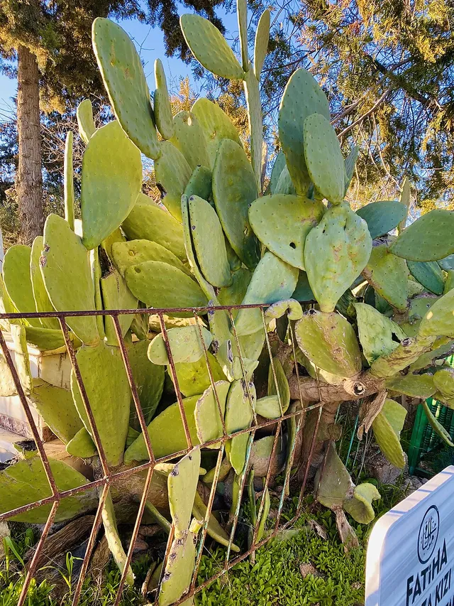

Wild fruit · Jan–Apr
Prickly pear
Opuntia
Also called Prickly pear
Prickly pear is a wild fruit you can forage from January to April in Arid centre, Subtropical east coast and Temperate south-east. Invasive cactus with flat pads; red-purple fruit in late summer.

Caution. Remove the fine glochid spines first.
When is prickly pear in season in Australia?
Prickly pear is usually in season January to April. Timing shifts with weather, latitude and altitude.
Where does prickly pear grow in Australia?
Prickly pear grows across Australia. Regions: Arid centre, Subtropical east coast, Temperate south-east.
How do you recognise prickly pear?
Invasive cactus with flat pads; red-purple fruit in late summer.
How do you harvest prickly pear?
Use tongs and thick gloves; twist off ripe red fruit and roll them in sand to remove spines.
How do you eat prickly pear?
Juice, jam.
How do you store prickly pear?
Freeze juice.
What is prickly pear good for?
Vitamin C.